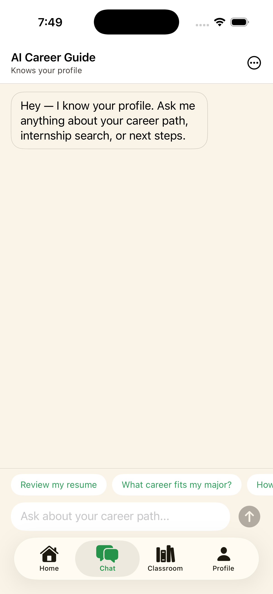

PointMan learns who you are, remembers every conversation, and points you toward a path that actually fits.
See it in action
The problem
Students are asked to choose a major, a career and a path long before anyone helps them work out what fits.
One-size-fits-all results that don't know your goals, courses or story.
A single meeting, then you're on your own until the next deadline.
Every conversation starts from scratch, so advice never builds on itself.
How it works
A short, conversational onboarding in place of long forms. Upload a resume if you like.
See the career direction that fits your goals, major and strengths.
Create a Guide, chat with your advisor, and redo it as you grow.
Progress, recommendation and next steps in one place.
Swipe through adaptive questions, or explain in your own words.

Ask anything. It already knows your profile.
Why PointMan
| Typical career quiz | One-off advising | PointMan | |
|---|---|---|---|
| Knows your profile | Barely | Per meeting | Yes, always |
| Remembers past chats | No | Notes, maybe | Yes |
| Available when you need it | Yes | By appointment | Any time |
| Gets sharper as you grow | No | Sometimes | Redo your Guide any time |
Features
Build your profile — major, year, GPA, goals, courses — and get an AI-generated recommendation made for you.
PointMan remembers your profile and conversations, so you never start over.
A personalized deep-dive document built from your answers, repeatable whenever things change.
Upload a resume and let onboarding fill in the picture of who you are.
The team
FAQ
College students who want help figuring out a major, career path or internship search.
Yes. PointMan keeps your profile and conversation history so advice builds on what you've already shared.
A short adaptive question session that produces a personalized document and sharpens your career recommendation. You can redo it any time.
PointMan is an early prototype. Join the waitlist and we'll reach out when it's ready.
We're building with students. Leave your email and we'll let you know when it's ready.